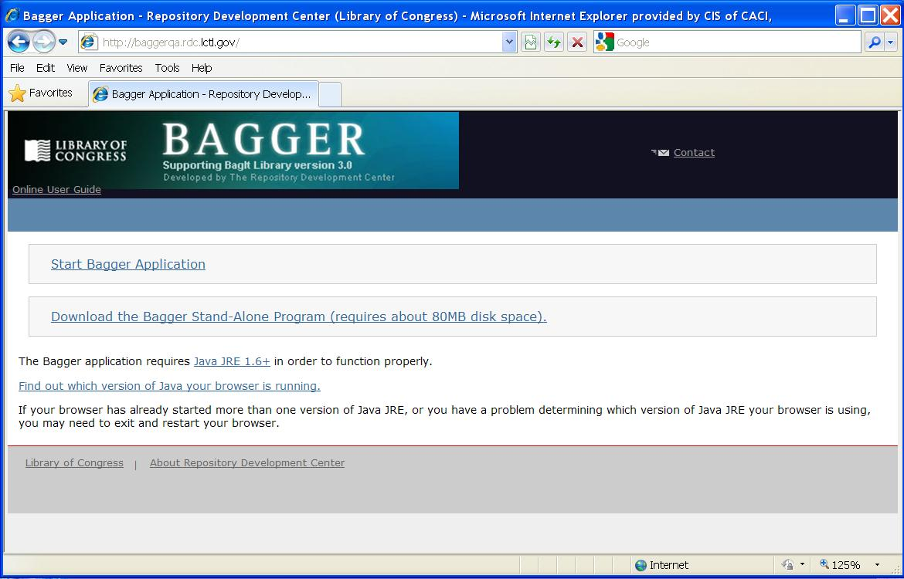
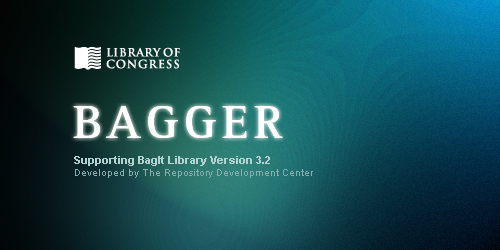

Bagger User Guide: Introduction
About
-
Bagger Version 1.6 supporting BagIt Library (BIL) version 3.0
U.S. Library of Congress The Repository Development CenterContacts Leslie Johnston Jon Steinbach Justin Littman
-
The Bagger application was created for the U.S. Library of Congress as a tool to produce a package of data files according to the BIL (BagIt Library) specification (see BIL Overview section). It can create a structured directory of files and folders, or it can create a serialized compressed archive file of the directory, such as a zip or tar file. For this document, 'bag' refers to BIL's representation of a bag. This bag is in-memory and may refer to content on disk. 'Bag on disk' refers to a bag that exists on disk.
Bagger and BIL
-
Bagger Version 1.6 supporting BagIt Library (BIL) version 3.0
The Bagger application is a graphical user interface to the BIL (BagIt Library) command line driver which is an implementation of tools conforming to the BagIt specification. For this document, 'bag' refers to BIL's representation of a bag. This bag is in computer memory which may have been loaded into the Bagger application from content on a disk. 'Bag on disk' refers to an instance of a bag that exists on a disk-drive as opposed to merely in computer memory.
Bagger differs from BIL by providing graphical dialogs and buttons for file and data manipulation features as well as a visual view of the bag contents, bag state and options. In addition Bagger provides a project profile capability. The user can create customized bag-info.txt data with project specific properties that the user defines, including: required fields, required field values and default field values. These project profile values can be saved and loaded as desired or shared with other users.
Getting Started
- Web
-
The Bagger application can be initiated using Java Web Start from a Web server using a Web browser that runs Java Runtime Environment 1.6+. Refer to the release notes for your environment to determine the Web site for accessing Bagger.
Selecting the link ‘Start Bagger Application’ will start the signed executable bagger.jar file and open the Bagger application.
-

- Windows Stand-alone
Select Start->Run
Select the Browse button
Select the location of bagger_stndalone.bat then select the Open button
Select the OK button
The stand-alone version of Bagger is intended for users that do not have access to the Internet, have multiple versions of the Java VM that may conflict with the Bagger application, or may have security constraints that prevent them from downloading and installing software on their systems.
To use the stand-alone version, copy and unzip the file bagger_stndalone_win.zip from the CD provided to you, or download the bagger_stndalone_win.zip file by selecting the link:
Download the Bagger Stand-Alone Program (requires about 80MB disk space)
The file bagger.jar is a signed executable application. To start the Bagger application, find the directory bagger_stndalone_win. In this directory you can double-click on the bagger_stndalone.bat file or you may:
The Bagger application starts with a splash banner page.

Note: Selecting the bagger.jar file directly may start Bagger correctly but it will rely upon a pre-existing installation of the Java 1.6+ VM instead of the included Java VM. It will also omit some initialization settings that improve performance and allow operation in environments with no Internet connectivity.